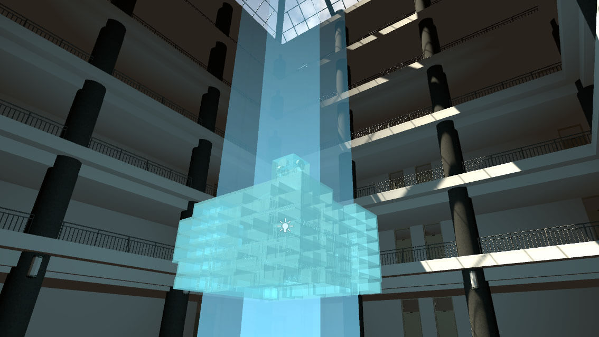

SDU's VR applications
Development
- Role: Programmer, 3D Artist, Producer
- Team Size: 5
- Duration: 7 months
- Language: C# (Unity)
- Platform: HTC VIVE
Contribution
- Built the OO code framework for two projects
- Developed interaction mechanism of objects in building
- Built realistic 3D models of complex structure of buildings
- Optimized shaders to make sure that they are suitable for VR platform
- Optimized code structure to improve the frame rate of program
My team has provided totally 2 different VR applications for Shandong University, one of which
is used for remote education in Xinglongshan Engineering Training Center of SDU while another
for displayment and VR reconstruction of the Department of Software Engineering. Besides, Xinglongshan's
remote education platform has successfully rigistered the National College Students' Science and Technology
Innovation Project and was highly rated by Li Keqiang, the present national premier.
As the leader of the team, my work is function designing, 3D modeling, script programming and scene optimizing.

Screenshot of the display project of Department of Software Engineering.
The building of Department of Software Engineering's 3D structure.
Some 3D models I made for the displayment project.
The building of Xinglongshan Engineering Training Center of SDU's 3D structure.
Screenshot of the remote education platform of Xinglongshan Engineering Training Center of SDU.
The space teleport is complished by using ray, the end point of which is player's teleport destination, casted by the vive controllers.
This system is designed for students whose major is medical science. With the vive controllers in hands, user can easily pull the delicate components in an organ apart and observe from any perspective they like. What's more, the field of machanics, astronomy, and other subject which has difficulties making model for display in real world can also apply this system.

The interactive UI in this system can display files in doc, docx, txt, jpg, png, ppt, and pptx format. And it can provide students a unique learning experience.